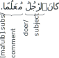

Not ready for study.
27 The verb كَانَ
27.1 Introduction
We have learned that a verb must have a doer in the raised-state and can have a direct doee in the propped-state. In this chapter, we will learn about a new type of verb, whose doer is called its subject, and whose direct doee is called its comment.
The principal verb of this type is كَانَ which is used to mean “was”. There are other verbs which behave in a similar manner and they are called the sisters of كَانَ.
27.2 كَانَ, its subject, and its comment
Consider the sentence:
ٱلرَّجُلُ مُعَلِّمٌ.
“The man is a teacher.”
This is a subject-comment sentence. ٱلرَّجُلُ is the subject in the raised-state, and مُعَلِّمٌ is the comment, also in the raised-state. Arabic does not, in this case, express any word for “is”.
Consider now the following sentence:
Now, as you can see, Arabic does express a word for “was”. It is the past verb كَانَ kāna. كَانَ is a hollow verb from the root كون. It’s resembling verb is يَكُونُ yakūnu. The complete table for this verb for all doer pronouns is given below:
| Doer pronoun | past verb | resembling verb |
|---|---|---|
| he | كَانَ | يَكُونُ |
| she | كَانَتْ | تَكُونُ |
| you1m | كُنْتَ | تَكُونُ |
| you1f | كُنْتِ | تَكُونِينَ |
| I | كُنْتُ | أَكُونُ |
| they2m | كَانَا | يَكُونَانِ |
| they2f | كَانَتَا | تَكُونَانِ |
| you2 | كُنْتُمَا | تَكُونَانِ |
| they3m | كَانُوا | يَكُونُونَ |
| they3f | كُنَّ | يَكُنَّ |
| you3m | كُنْتُمْ | تَكُونُونَ |
| you3f | كُنْتُنَّ | تَكُنَّ |
| we | كُنَّا | نَكُونُ |
Like, for other verbs, the doer of كَانَ, ٱلرَّجُلُ, is in the raised-state, and and its direct doee, مُعَلِّمًا, is in the propped-state.
However, unlike most other verbs, the doer of كَانَ, ٱلرَّجُلُ, is also called its subject and its direct doee, مُعَلِّمًا, is also called its comment.
So a sentence with كَانَ used in this way is a subject-comment sentence. If it begins with كَانَ then it is also a verbal sentence at the same time.
This property also applies to the sisters of كَانَ that we will learn later in this chapter. Together, these verbs are also called deficient verbs, because, besides their doer/subject, they also need an comment to complete the meaning of the sentence. That is, without the comment, the sentence is deficient.
“Is” subject-comment sentences can be converted to “was” subject-comment sentences using the verb كَانَ. Here are some examples:
| “is” | “was” |
|---|---|
| زَيْنَبُ جَائِعَةٌ. | كَانَتْ زَيْنَبُ جَائِعَةً. |
| “Zaynab is hungry.” | “Zaynab was hungry.” |
| ٱَلْغُلَامُ زَيْدٌ. | كَانَ ٱلْغُلَامُ زَيْدًا. |
| “The boy is Zayd.” | “The boy was Zayd.” |
| ٱَلنِّسَاءُ فِي بُيُوتِهِنَّ. | كَانَتْ ٱلنِّسَاءُ فِي بُيُوتِهِنَّ. |
| “The women are in their houses.” | “The women were in their houses.” |
| هُمْ مَسْرُورُونَ وَفَرِحُونَ. | كَانُوا مَسْرُورِينَ وَفَرِحِينَ. |
| “They3m are happy and rejoicing.” | “They3m were happy and rejoicing.” |
| أَنَا نَائِمَةٌ. | كُنْتُ نَائِمَةً. |
| “I1f am sleeping.” | “I1f was sleeping.” |
| أَنْتَ لِي أَخٌ. | كُنْتَ لِي أَخًا. |
| “You1m are a brother to me. | “You1m were a brother to me. |
27.2.1 Sequence of كَانَ, its subject, and its comment
In sentence word order, the natural sequence is verb, subject, comment.
كَانَ زَيْدٌ قَائِمًا.
“Zayd was standing.”
but we may also, for the same meaning, apply the sequence verb, comment, subject:
كَانَ قَائِمًا زَيْدٌ.
“Zayd was standing.”
and also the sequence comment, verb, subject:
قَائِمًا كَانَ زَيْدٌ.
“Zayd was standing.”
This last order is common in questions and alternative sentence sentences. For example:
أَقَائِمًا كَانَ زَيْدٌ.
“Was Zayd standing?”
ٱُدْعُ زَيْدًا قَائِمًا كَانَ أَوْ جَالِسًا!
“Call Zayd, be he standing or sitting!”
Sometimes, however, this inversion is impossible because of an indistinguishable state of the two nouns.
For example, in order to express “My brother was my companion,” we must say:
كَانَ أَخِي رَفِيقِي.
“My brother was my companion.”
This is because, if we invert it, it would naturally mean:
كَانَ رَفِيقِي أَخِي.
“My companion was my brother.”
The following apparent sequence is also possible:
زَيْدٌ كَانَ قَائِمًا.
“Zayd: he was standing.”
But this is actually a subject-comment sentence. زَيْدٌ is the subject. And the comment is كَانَ قَائِمًا, which is itself a كَانَ subject-comment sentence in the sequence verb, subject, comment. The subject is the hidden pronoun “he” and the comment is قَائِمًا.
27.2.2 Plurals of non-rational beings with كَانَ
Because كَانَ sentences are subject-comment being sentences, many of the rules that we have learned for subject-comment sentences also apply to كَانَ sentences. One such rule is that when the subject of a sentence is a plural of non-rational beings, and the comment is a adjectival noun, then the feminine singular adjectival noun is often used. (See section @ref(usage-of-plurals-of-non-intelligent-beings).) For example:
كَانَتِ ٱلْبُيُوتُ صَغِيرَةً. (typical)
“The houses were small.”
Also allowed, but not as common:
كَانَتِ ٱلْبُيُوتُ صَغِيرَاتٍ.
كَانَتِ ٱلْبُيُوتُ صِغَارًا.
ٱلثِّيرَانُ كَانَتْ ضَخْمَةً. (typical)
“The bulls were large.”
Also allowed, but not as common:
ٱلثِّيرَانُ كَانَتْ ضِخَامًا.
ٱلثِّيرَانُ كُنَّ ضَخْمَاتٍ.
27.2.3 كَانَ with a separating pronoun
Another rule that applies to subject-comment sentences, and that carries over to كَانَ sentences, is that when the subject and comment are both definite, then a separating pronoun, which is a detached pronoun that matches the subject, can be inserted between them. For example,
كَانَ ٱلْمُؤْمِنُونَ هُمُ ٱلْفَائِزِينَ.
“The believers were the winners.”
The separating pronoun هُمْ does not, in this case, serve to disambiguate the comment ٱلْفَائزِينَ “the winners”, from being a describer, as it did in sentences without كَانَ (see section @ref(subject-comment-sentences-separating-pronoun)). This is because the propped-state of ٱلْفَائزِينَ already tells us that it is the comment of كَانَ. If ٱلْفَائزِينَ were a describer of the raised-state subject ٱَلْمُوْمِنُونَ, then it too would be in the raised-state, not the propped-state. So the separating pronoun serves more, here, to emphasize the subject.
Most of the time, separating pronouns are used in كَانَ sentences when the subject of كَانَ is itself a pronoun. Examples:
وَكُنَّا نَحْنُ ٱلْوَارِثِينَ
“And it is We who were the inheritors”
كُنْتَ أَنْتَ ٱلرَّقِيبَ عَلَيْهِمْ
“You were the Observer over them”
Sometimes a pronoun may appear to be a separating pronoun, but actually is not one. Consider, for example, the following sentence:
كَانَ ٱلْمُؤْمِنُونَ هُمُ ٱلْفَائِزُونَ.
“The believers were the winners.”
Note that ٱَلْفَائِزُونَ is in the raised-state, so it is not, by itself, the comment of كَانَ. So this is, in fact, a subject-comment sentence. ٱَلْمُوْمِنُونَ is the subject of كَانَ. The comment of كَانَ is the comment هُمُ ٱلفَائِزُونَ, which is itself a subject-comment sentence with a raised-state subject (هُمْ) and a raised-state comment (ٱلْفَائزُونَ).
27.2.4 Negating كَانَ
Like other past verbs, the verb كَانَ may be negated by preceding it with the particle مَا. For example:
مَا كَانَ إِبْرَٰهِيمُ يَهُودِيًّۭا وَلَا نَصْرَانِيًّۭا وَلَـٰكِن كَانَ حَنِيفًۭا مُّسْلِمًۭا وَمَا كَانَ مِنَ ٱلْمُشْرِكِينَ
“Abraham was neither a Jew nor a Christian, but he was one inclining toward truth, a Muslim [submitting to Allāh]. And he was not of the polytheists.”
A similar meaning may be obtained with the particle لَمْ followed by the clipped-state resembling verb يَكُنْ. This is dealt with in section @ref(lam-yakun) below.
27.2.5 Gender of a pronoun subject of كان
Remember from section @ref(gender-of-pronoun-subject) that when the subject of a sentence is a pronoun, then it may optionally either match the gender of the noun it refers to, or the the gender of the predicate. This rules carries over to كَانَ subject-comment sentences as well. For example:
ذَهَبْتُ إِلَى ٱلسُّوقِ فِي ٱلصَّبَاحِ. وَكَانَتْ لِي عَادَةً.
“I went to the market in the morning. And it was a habit for me.”
وَرَكِبُوهُمْ فَكَانَتْ هَزِيمَتَهُمْ
“And they bore down upon them and it was their defeat.”
Note, how, in the above examples, كَانَتْ has a ت of femininity to match the feminine gender of the comment عَادَة “habit”, and هَزِيمَتَهُمْ “their defeat”.
27.2.6 A pronoun as the comment of كَانَ
TODO
27.3 The resembling verb يَكُونُ
The rules related to كَانَ, its subject, and its comment, that we have given above apply also to its resembling verb يَكُونُ.
We will now discuss the usages of the specific states of the resembling verb.
27.3.1 The raised-state resembling verb يَكُونُ
We have already mentioned that Arabic does not usually express any word for “is”. So when, then, is the raised-state resembling verb يَكُونُ used? There are actually a few uses of this verb. We will explain them below:
27.3.1.1 يَكُونُ used for habitual “is”
Consider the sentence, “The mother cooks the food.” The verb “cooks” implies that the action is habitually done, not necessarily that it is being done at present. If we wished to say that the action is being done at present, we might instead say, “The mother is cooking the food.” English maintains this distinction between the present and the habitual for most verbs. But it does not for ther verb “is”. So if we say, “The sky is blue,” then it can mean both (i) that the sky is blue at present, or (ii) that it is habitually blue, not necessarily that it is blue at present.
In Arabic the situation is somewhat different. Arabic does not usually have a distinction between the present and the habitual for most verbs. So تَطْبُخُ الْأُمُّ الطَّعَامَ. may mean both (i) that the mother is cooking the food at present, or (ii) that she habitually does.
But for the verb “is”, Arabic can distinguish between the present and the habitual. So if we say السَّمَاءُ زَرْقَاءُ, then this can, in general, mean both (i) that the sky is blue at present, and (ii) that it is habitually blue. If we wish to emphasize the habitual meaning, we may use the resembling verb يَكُونُ, thus:
تَكُونُ السَّمَاءُ زَرْقَاءَ.
“The sky is [habitually] blue.”
While we call this the habitual يَكُونُ, it can include a range of meanings, including continually, recurringly, regularly, typically, generally, often, sometimes, can, may, etc. Habitual يَكُونُ is negated using مَا or لَا, just like other raised-state resembling verbs.
Here are some examples:
قَالَ وَمَا الْبِتْعُ وَالْمِزْرُ؟ قُلْتُ شَرَابٌ يَكُونُ مِنَ الْعَسَلِ وَالْمِزْرُ يَكُونُ مِنَ الشَّعِيرِ
“He said: ‘What is mead and beer?’ I said: ‘A drink: it is from honey, and beer: it is from barley.’”
يَكُونُ اللِّحَافُ وِسَادَةً وَلَا تَكُونُ الْوِسَادَةُ لِحَافًا.
“The blanket can be a pillow but the pillow cannot be a blanket.”
مَا يَكُونُ الرَّجُلُ صَدِيقَكَ حَتّى يَصْدُقَكَ.
“A man is not your friend until he is truthful to you.”
27.3.1.1.1 قَدْ يَكُونُ for “may be”
When the meaning “may be” is desired, the the resembling verb يَكُونُ may be preceded by the particle قَدْ. For example,
قَدْ يَكُونُ الاسْتِهْزَاءُ كُفْرًا.
“Mocking may be a disbelief.”
27.3.1.2 يَكُونُ used for future “will be”
Another usage of the resembling verb يَكُونُ is for the future tense to mean “will be”. In this case, it is often preceded by سَ or سَوْفَ. سَ and سَوْفَ are optional and are commonly dropped, especially when the context indicates the future. Future يَكُونُ is negated by لَا. Here are some examples:
فَقَدْ كَذَّبْتُمْ فَسَوْفَ يَكُونُ لِزَامًا
“For you [disbelievers] have denied, so it [i.e., your denial] is going to be adherent.”
لا يَكونُ اللَّعَّانُونَ شُفَعَاءَ وَلَا شُهَدَاءَ يَومَ القِيَامَةِ
“The frequent cursers will be neither intercessors nor witnesses [on] the day of resurrection.”
(يَوْمَ is in the propped-state because it is an adverb of time, see chapter @ref(adverb-of-time).)
يَوْمَ يَكُونُ ٱلنَّاسُ كَٱلْفَرَاشِ ٱلْمَبْثُوثِ
“It is the Day when people will be like moths, dispersed,”
27.3.2 The propped-state resembling verb يَكُونَ
Like propped-state resembling verbs in general, يَكُونَ “be” expresses the meaning of purpose, wish, or expectation. It occurs after the particles أَنْ, لَنْ, لِ, كَيْ, حَتَّىٰ, and إِذَنْ. All this is consistent with what we have learned about propped-state resembling verbs in chapter @ref(propped-state-resembling-verbs). Here are some examples:
نَزَلَ بِهِ ٱلرُّوحُ ٱلْأَمِينُ. عَلَىٰ قَلْبِكَ لِتَكُونَ مِنَ ٱلْمُنذِرِينَ
“The Trustworthy Spirit [i.e., Gabriel] has brought it down. Upon your heart, [O Muḥammad] - that you may be of the warners -”
لَّن يَسْتَنكِفَ ٱلْمَسِيحُ أَن يَكُونَ عَبْدًۭا لِّلَّهِ وَلَا ٱلْمَلَـٰٓئِكَةُ ٱلْمُقَرَّبُونَ
“Never would the Messiah disdain to be a servant of Allāh, nor would the angels near [to Him]”
أَفَأَنتَ تُكْرِهُ ٱلنَّاسَ حَتَّىٰ يَكُونُوا۟ مُؤْمِنِينَ
“Then, [O Muḥammad], would you compel the people in order that they become believers?”
27.3.3 The clipped-state resembling verb يَكُنْ
The clipped-state resembling verb يَكُنْ is used consistent with the usage of clipped-state resembling verbs in general. (See chapter @ref(clipped-state-resembling-verbs).)
For example:
وَلْتَكُن مِّنكُمْ أُمَّةٌۭ يَدْعُونَ إِلَى ٱلْخَيْرِ وَيَأْمُرُونَ بِٱلْمَعْرُوفِ وَيَنْهَوْنَ عَنِ ٱلْمُنكَرِ
“And let there be [arising] from you a nation inviting to [all that is] good, enjoining what is right and forbidding what is wrong,1 and those will be the successful.”
ٱلْحَقُّ مِن رَّبِّكَ فَلَا تَكُن مِّنَ ٱلْمُمْتَرِينَ
“The truth is from your Lord, so do not be among the doubters.”
لَمْ يَكُنِ النَّبِيُّ صلى الله عليه وسلم سَبَّابًا وَلاَ فَحَّاشًا وَلاَ لَعَّانًا
“The Prophet ﷺ was not one who would abuse (others) or say obscene words, or curse (others)”
27.3.3.1 Deletion of ن
The ن may (irregularly) be deleted for the clipped-state resembling verbs that don’t have a و before them. These are:
- يَكُنْ, becomes يَكُ
- تَكُنْ, becomes تَكُ
- نَكُنْ, becomes نَكُ
- أَكُنْ, becomes أَكُ
This may only be done when the word following the verb does not begin with a connecting hamzah ٱ. Examples:
وَلَا تَكُ فِى ضَيْقٍۢ مِّمَّا يَمْكُرُونَ
“and do not be in distress over what they conspire.”
وَقَدْ خَلَقْتُكَ مِن قَبْلُ وَلَمْ تَكُ شَيْـًۭٔا
“for I created you before, while you were nothing”
But we can’t say:
\(\times\) لَمْ تَكُ ٱلرَّجُلَ.
This is because ٱلرَّجُل begins with with a connecting hamzah ٱ. So we have to say instead:
لَمْ تَكُنِ ٱلرَّجُلَ.
“You were not the man.”
27.4 The verb of command كُنْ
The verb of command كُنْ is used to mean “Be!”. Examples:
قُلْنَا يَـٰنَارُ كُونِى بَرْدًۭا وَسَلَـٰمًا عَلَىٰٓ إِبْرَٰهِيمَ
We [i.e., Allāh] said, “O fire, be coolness and safety upon Abraham.”
فَقُلْنَا لَهُمْ كُونُوا۟ قِرَدَةً خَـٰسِـِٔينَ
“and We said to them, ‘Be apes, despised.’
The verb of command كُنْ followed by the name of a person in the propped-state is used to express one’s guessing that the person whom one sees is the individual named. For example:
كُنْ أَبَا ذَرٍّ
“I presume that the person approaching is Abū D͡harr”
كُنْ أَبَا زَيْدٍ
“I guess that you are Abū Zayd.”
27.5 The complete كَانَ
The verb كَانَ that we have been using so far is called the deficient كَانَ. It is called so because its meaning is deficient without its comment. For example, in the sentence كَانَ زَيْدٌ قَائِمًا “Zayd was standing,” if we remove the comment قَائِمًا then the sentence is not complete for the desired meaning.
There is another type of كَانَ called the complete كَانَ. This كَانَ does not need an comment to complete its meaning. This كَانَ gives the meaning of “exists”. In English, we usually express this meaning using “there was”. For example,
كَانَ مَلِكٌ.
“There was a king.”
(literally: “A king was.”)
Note that مَلِك “king” is in the raised-state as the subject. If it were in the propped-state, then it would change the meaning:
كَانَ مَلِكًا.
“He was a king.”
Here are some more examples:
كَانَ تَاجِرٌ وَكَانَ لَهُ بَنُونَ.
“There was a trader, and he had sons.”
Incidentally, as you can see, the past verb of “have”: “has” is expressed using كَانَ:
كَانَ عِنْدِي كِتَابٌ.
“I had a book.”
(literally: “A book was for me.”)
يَكُونُ فِي آخِرِ الزَّمَانِ دَجَّالُونَ كَذَّابُونَ
“There will be in the end of time charlatan liars”
[From Ḥadīt͡h in Ṣaḥīḥ Muslim:7]
إِنَّهَا تَكُونُ الظُّلْمَةُ وَالسَّيْلُ
“[At times there] is darkness and flooding”
لَمْ تَكُنِ ٱلْحَرْبُ.
“The war didn’t occur.”
(literally: “The war was not.”)
27.6 Time signification of the past verb كَانَ
The general siginification of the past verb كَانَ is to indicate a state that existed in the past, and that has possibly ceased. For example:
كَانَ زَيْدٌ قَائِمًا
“Zayd was standing.”
This statement is regarding Zayd’s state in the past and the implication is that he is possibly no longer standing.
This is the most common signification of the past verb كَانَ and the one that we have been using so far. But كَانَ is special in that it admits additional significations:
The second signification of كَانَ is to indicate a state that, at first, had not yet begun, and which then began and remained, possibly up to the present. It has, in this sense, the meaning “became”, “has become”, or “happened”. Examples:
أَبَىٰ وَٱسْتَكْبَرَ وَكَانَ مِنَ ٱلْكَـٰفِرِينَ
“He refused and was arrogant and became of the disbelievers.”
احْتَرَقَ الْخَشَبُ فَكَانَ تُرَابًا.
“The wood burned and so became dust.”
A third signification of كَانَ is to indicate a state that will be in the future. For example:
وَيَخَافُونَ يَوْمًۭا كَانَ شَرُّهُۥ مُسْتَطِيرًۭا
“and [they] fear a Day whose evil will be widespread.”
A fourth signification of كَانَ is to indicate a state that always existed and will always exist.1 For example:
وَكَانَ ٱللَّهُ غَفُورًۭا رَّحِيمًۢا
“And ever is Allāh Forgiving and Merciful.”
وَلَا تَقْرَبُوا۟ ٱلزِّنَىٰٓ ۖ إِنَّهُۥ كَانَ فَـٰحِشَةًۭ وَسَآءَ سَبِيلًۭا
“And do not approach unlawful sexual intercourse.1 Indeed, it is ever an immorality and is evil as a way.”
27.7 كَانَ combined with other verbs
The past verb كَانَ and its resembling verb يَكُونُ are combined with other verbs to express complex tenses in the past and the future, respectively. We will explain these combinations below.
27.7.1 كَانَ combined with a resembling verb
كَانَ is combined with a following resembling verb to express that the action of the verb was repeatedly or continually ocurring in the past. For example:
كَانَ زَيْدٌ يَكْتُبُ.
“Zayd was writing.”
or
“Zayd used to write.”
or
“Zayd would write.”
This sentence can be analyzed grammatically as a subject-comment sentence. The subject of كَانَ is زَيْد and it is the subject of the sentence. The comment of كَانَ is itself a sentence يَكْتُبُ “he writes”, and it is the comment of the main sentence.
The order of the subject and the resembling verb can be re-arranged for the same meaning thus:
كَانَ يَكْتُبُ زَيْدٌ.
Now, two grammatical analyses are possible:
- زَيْد is the doer of يَكْتُبُ, and the subject of كَانَ is a hidden pronoun of the fact.
- زَيْد is the delayed subject of كَانَ and يَكْتُبُ is the comment of كَانَ. The doer of يَكْتُبُ is a hidden pronoun.
Either way, the meaning, as we have mentioned, is the same. Here are some more examples for different types of doers/subjects:
كَانَ يَعْبُدُ مُشْرِكُو مَكَّةَ ٱلْأَصْنَامَ.
or
كَانَ مُشْرِكُو مَكَّةَ يَعْبُدُونَ ٱلْأَصْنَامَ.
“The polytheists of Makkah used to worship idols.”
كَانَتْ تُحِبُّ الصَّدَقَةَ.
“She used to love [to practice] charity.”
كَانَت تَّأْتِيهِمْ رُسُلُهُم بِٱلْبَيِّنَـٰتِ
“their messengers used to come to them with clear evidences”
(Sound plurals, even of rational beings, may be treated as grammatically singular feminine. See section @ref(sound-plurals-sing-fem).)
كُنْتُ أَلْعَبُ بِالْبَنَاتِ عِنْدَ النَّبِيِّ صلى الله عليه وسلم وَكَانَ لِي صَوَاحِبُ يَلْعَبْنَ مَعِي
“I used to play with dolls in the presence of the Prophet, and I had companionsf playing with me.”
Occasionally, the particle قَدْ precedes the combination of كَانَ and the resembling verb. Example:
قَالُوا هَذَا قَدْ كَانَ يَكْتُبُ لِمُحَمَّدٍ
“They said, ‘This [person] used to transcribe for Muḥammad ﷺ’”
The following resembling verb may also be an passive verb. Example:
إِنَّ أُنَاسًا كَانُوا يُؤْخَذُونَ بِالْوَحْىِ فِي عَهْدِ رَسُولِ اللَّهِ صلى الله عليه وسلم
“Indeed people were (sometimes) judged (literally: held) by the [revealing of] divine inspiration in the lifetime of the Prophet.”
27.7.1.1 One كَانَ suffices multiple resembling verbs
If the signification of an action ocurring continually in the past applies to more that one resembling verb, then it is sufficient to prefix كَانَ to only the first one. Example:
كَانَتْ تَعْمَلُ بِيَدِهَا وَتَصَدَّقُ
“She used to work with her hand and spend (that income) on charity.”
(تَتَصَدَّقُ is abbreviated to تَصَدَّقُ. See section @ref(form-5-verbs-abbrev).)
27.7.1.2 Negation of كَانَ and a resembling verb
In order to negate the combination of كَانَ and the following resembling verb, multiple options are available. Using يَفْعَلُ as an example resembling verb, we can have:
- مَا كَانَ يَفْعَلُ
- لَمْ يَكُنْ يَفْعَلُ
- كَانَ لَا يَفْعَلُ
Examples:
مَا كَانَ أَحَدٌ يَبْدَأُ، أَوْ يَبْدُرُ، ابْنَ عُمَرَ بِالسَّلامِ
“No one preceded or got ahead of Ibn Ɛumar with (giving) the greeting.”
كَانُوا۟ لَا يَتَنَاهَوْنَ عَن مُّنكَرٍۢ فَعَلُوهُ
“They used not to prevent one another from wrongdoing that they did.”
لَمْ يَكُونُوا يَسْأَلُونَ عَنِ الإِسْنَادِ
“They would not ask about the chains of narration”
In terms of the differences between these constructions مَا كَانَ يَفْعَلُ imparts more emphasis in the denial than كَانَ لَا يَفْعَلُ.
There is also difference between the options مَا كَانَ يَفْعَلُ and كَانَ لَا يَفْعَلُ in terms of when one would be used instead of the other.2. For example, if someone says to you: “I thought I saw you writing yesterday.” To reply in the negative, you would say: مَا كُنْتُ أَكْتُبُ instead of كُنْتُ لَا أَكْتُبُ to mean “I was not writing.”
The construction مَا كَانَ يَفْعَلُ is also used when one wishes to say that one never used to do something due to one’s circumstances And also to mean that one did not know how to do something in the past. For example,
مَا كُنْتُ أَحْفَظُ شِعْرًا.
“I used to not memorize any poetry.”
As for كَانَ لَا يَفْعَلُ, it connotes an intentional or purposeful lack of doing something. Whereas, with مَا كَانَ يَفْعَلُ, the lack of action may be incidental. For example, كَانَ لَا يَقْرَأُ ٱلْقُرْآنَ “He used to not read the Qurʾān imparts that the person was intentionally not doing so. Whereas مَا كَانَ يَقْرَأُ ٱلْقُرْآنَ does not convey the intentionality of the lack of action. For example, the person may not have been reading the Qurʾān because he did not know how to.
27.7.1.3 The combination of كَانَ with يَكُونُ
Occasionally, كَانَ can be combined with its own resembling verb يَكُونُ This gives the meaning “was being” or “used to be”. يَكُونُ is, in this combination, often optional and may be dropped for no change in meaning. Examples:
كَانَ يَكُونُ فِي مِهْنَةِ أَهْلِهِ
and
كَانَ فِي مِهْنَةِ أَهْلِهِ
“He used to keep himself busy serving his family”
قَدْ كَانَ يَكُونُ فِي الأُمَمِ مُحَدَّثُونَ
“There used to be in the nations inspired persons”
رِجَالٌ كَانُوا يَكُونُونَ مَعَ ٱلْمُلُوكِ
“men that used to be with the kings”
كَانَ يَكُونُ فِي ٱلْبَيْتِ
“He used to be in the house.”
27.7.1.4 Possible occurrence
Sometimes كَانَ is used with a resembling verb to express an action that could, should, or would have occurred. Examples:
كَانَ يَكُونُ سُوءَ أَدَبٍ.
“It would have been a misbehavior.”
فَقَالَ حُذَيْفَةُ أَنْتَ كُنْتَ تَفْعَلُ ذَلِكَ
“Ḥud͡hayfah said: ‘You might have done that.’”
This meaning can also be for the future, for example in a question:
أَىَّ شَىْءٍ كُنْتَ تَصْنَعُ
“Which thing would you do?”
27.7.1.5 Omission of كَانَ
If one or more past verbs precedes the resembling verb or if the context indicates that the action was occurring in the past, then كَانَ can be omitted, and the resembling verb is used by itself.3 For example:
قُلْ فَلِمَ تَقْتُلُونَ أَنۢبِيَآءَ ٱللَّهِ مِن قَبْلُ
“Say,”Then why did you kill the prophets of Allāh before”
(No كُنْتُمْ before تَقْتُلُونَ.)
وَٱتَّبَعُوا۟ مَا تَتْلُوا۟ ٱلشَّيَـٰطِينُ عَلَىٰ مُلْكِ سُلَيْمَـٰنَ ۖ
“And they followed [instead] what the devils had recited during the reign of Solomon”
(No كَانَتْ before تَتْلُو.)
27.7.1.6 كَانَ followed by a doer participle or doee participle instead of a resembling verb
Instead of a resembling verb after كَانَ, its doer participle or doee participle may be used instead. And this can give the effect of a state of being rather than an action being done. For example:
كَانَ سَاكِنًا
“He was dwelling”
كَانَتِ ٱلْعُصِيُّ مَرْكُوزَةً فِي ٱلْأَرْضِ.
“The staffs were sticking in the ground.”
(كَانَتْ تُرْكَزُ would imply that they were being stuck.)
When the verbal noun refers to an action taking place in the future, the idea of futurity is transferred to a past time. For example:
أَمْرٌ كَانَ مَفْعُولًا
“a matter which was to be done”
27.7.2 كَانَ combined with a past verb
كَانَ is combined with a following past verb to denote an action completed prior to some past (specified or implied) point in time. Example:
مَاتَ ٱلرَّشِيدُ بِطُوسَ وَكَانَ خَرَجَ إِلَىٰ خُرَاسَانَ لِمُحَارَبَةِ رَافِعِ بْنِ ٱللَّيْثِ
“al-Ras͡hīd died at Ṭūs after (literally: and) he had set out for K͡hurāsān to combat Rāfiɛ ibn al-Layt͡h.”
The particle قَدْ is often used when كَانَ is combined with a past verb. قَدْ may be placed either between كَانَ and the following past verb, or before كَانَ. Examples:
كُنْتُ قَدْ رَبَّيْتُ جَارِيَةً
“I had brought up a girl”
قَدْ كَانَتْ فَرَغَتْ مِنْ عَمَلِهَا.
“She had been done with her work.”
When their are multiple past verbs, and one (or more) of them occurred farther in the past than the others, it is indicated with قَدْ, the others having merely كَانَ. We re-use a previous example here and extend it:
مَاتَ ٱلرَّشِيدُ بِطُوسَ وَكَانَ خَرَجَ إِلَىٰ خُرَاسَانَ لِمُحَارَبَةِ رَافِعِ بْنِ ٱللَّيْثِ. وَكَانَ رَافِعٌ هَـٰذَا قَدْ خَرَجَ وَخَلَعَ ٱلطَّاعَةَ وَتَغَلَّبَ عَلَىٰ سَمَرْقَنْدَ.
“al-Ras͡hīd died at Ṭūs after he had set out for K͡hurāsān to combat Rāfiɛ ibn al-Layt͡h. And this Rāfiɛ had already rebelled and cast off his allegiance and taken forcible posession of Samarqand.”
(Note how قَدْ is only used before Rāfiɛ’s action of rebelling.)
27.7.2.1 Negation
This combination may, again, be negated in multiple ways. Examples:
لاَ يَأْتِي ابْنَ آدَمَ النَّذْرُ بِشَىْءٍ لَمْ يَكُنْ قَدْ قَدَّرْتُهُ
“Vowing does not bring to the son of Adam anything I have not already written in his fate,”
وَدِدْتُ أَنِّي لَمْ أَكُنْ خَرَجْتُ الْعَامَ
“I wish I had not come out (for Ḥajj) this year”
وَمَا كَانَ قَدْ أَتَاهَا بِشَيْءٍ
“And he had not brought her anything”
27.7.3 يَكُونُ combined with a past verb
The resembling verb يَكُونُ is compined with a past verb (often with an interposed قَدْ) to express that the action is conceived of having been completed in the future. Examples:
يَكُونُ قَدْ وَجَبَ عَلَيْكَ صَدَقَةٌ
“Charity will have been incumbent upon you”
فَلْنَأْخُذْهُ فَنَكُونُ قَدْ أَخَْذْنَا عِوَضًا
“Let us take him for (then) we will have taken a substitute”
27.7.3.1 propped-state يَكُونَ combined with a past verb
An propped-state يَكُونَ is combined with a past verb to express being in a state of an action having occurred or that might have occurred. For example:
خَافَ أَنْ يَكُونَ قَدْ أَخْطَأَ
“He feared that he could have erred.”
وَيَجُوزُ أَنْ يَكُونُوا سُبِقُوا
“And that they might have been preceded is possible”
يَشْتَرِطُ فِي ٱلنَّائِبِ أَنْ يَكُونَ قَدْ حَجَّ عَنْ نَفْسِهِ
“It is conditional for the deputy that he be in as state of already having performed the Ḥajj for himself.”
27.7.4 Verb of command كُنْ combined with a resembling verb
Ocassionally, the verb of command كُنْ is combined with a resembling verb, thus:
كُنْ أَنْتَ تُكَلِّمُهُمْ
“You be speaking to them!”
27.8 كَانَ with the ل of denial
One special use of كَانَ is what is termed the ل of denial. This is a negative كَانَ (either مَا كَانَ or لَمْ يَكُنْ with the appropriate suffixes or prefixes for the subject) followed by لِ and then an propped-state resembling verb. This expresses the meaning of:
- to deny being the one to do something, or
- to deny going to do something
Here are some examples:
لَمْ تَكُنْ زَيْنَبُ لِتَضْرِبَ وَلَدَهَا
“Zaynab was not one to beat her child.”
or
“Zaynab was not going to beat her child.”
وَمَا كَانَ ٱللَّهُ لِيُعَذِّبَهُمْ وَأَنتَ فِيهِمْ ۚ
“But Allāh would not punish them while you, [O Muḥammad], are among them”
فَقَالَ أَتَخْشَيْنَ أَنْ أَقْتُلَهُ مَا كُنْتُ لأَفْعَلَ ذَلِكَ
“He said: Do you fear that I shall kill him ? I am not going to do that.”
قَالَ لَمْ أَكُنْ لأَفْعَلَ
“He said: I was not going to do that.”
27.9 كَانَ with the ل of deserving
Closely related, yet distinct from, the use of كَانَ with the ل of denial (above) is the use of كَانَ with a ل that signifies deserving, behooving, appropriateness, or possibility. This is, again, a negative كَانَ followed by the preposition لِ and a following lowered-state noun, and then أَنْ followed by an propped-state resembling verb. This signifies that the action of the verb does not behoove, or is not appropriate or desrving or possibly for the person denoted by the noun after لِ.4 For example:
فَأَنۢبَتْنَا بِهِۦ حَدَآئِقَ ذَاتَ بَهْجَةٍۢ مَّا كَانَ لَكُمْ أَن تُنۢبِتُوا۟ شَجَرَهَآ ۗ
“causing to grow thereby gardens of joyful beauty which you could not [otherwise] have grown the trees thereof”
مَا كَانَ لِبَشَرٍ أَن يُؤْتِيَهُ ٱللَّهُ ٱلْكِتَـٰبَ وَٱلْحُكْمَ وَٱلنُّبُوَّةَ ثُمَّ يَقُولَ لِلنَّاسِ كُونُوا۟ عِبَادًۭا لِّى مِن دُونِ ٱللَّهِ
“It is not for a human [prophet] that Allāh should give him the Scripture and authority and prophethood and then he would say to the people, ‘Be servants to me rather than Allāh,’”
قَالَ أَبُو بَكْرٍ مَا كَانَ لاِبْنِ أَبِي قُحَافَةَ أَنْ يُصَلِّيَ بَيْنَ يَدَىْ رَسُولِ اللَّهِ صلى الله عليه وسلم
“Abū Bakr said ; it was not befitting for the son of Abū Quḥāfah to lead the prayer in the presence of the Messenger of Allāh ﷺ”
معاني النحو لفاضل صالح السامرائي 1/222↩︎
Wright, vol. ii, §9, p. 21C↩︎
https://tafsir.app/albahr-almuheet/3/79, https://tafsir.app/ibn-aashoor/3/79↩︎